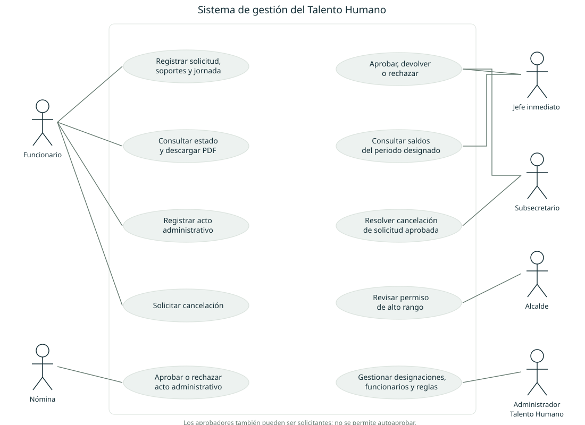
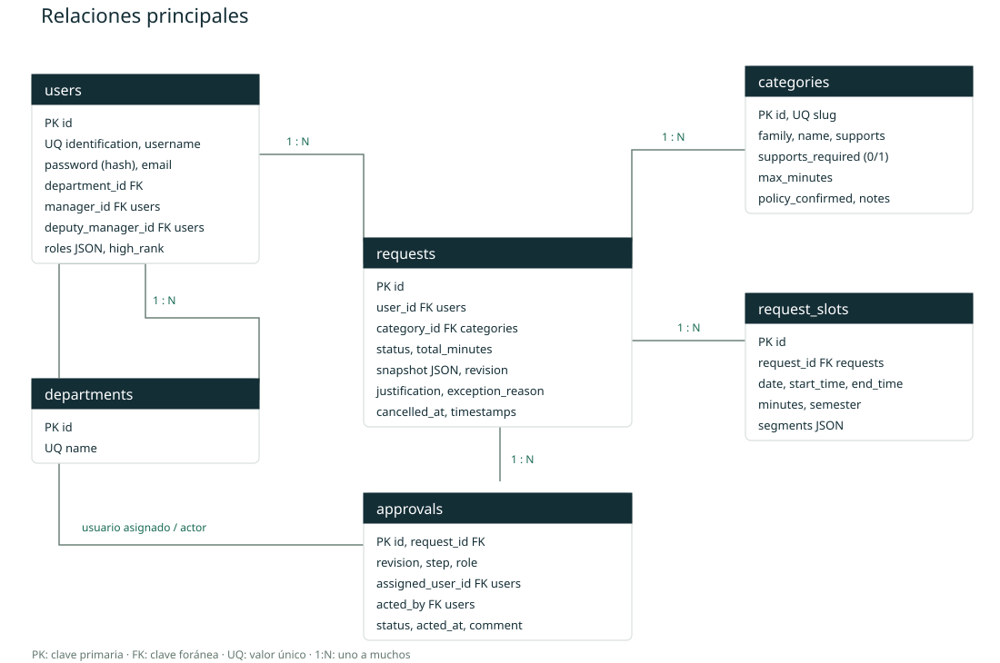
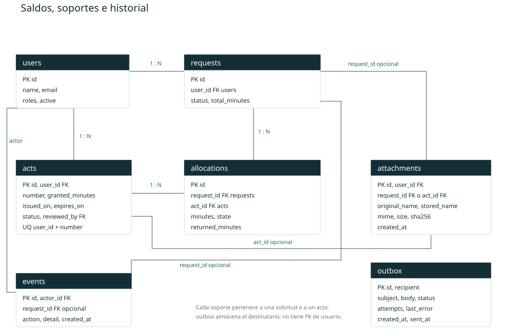
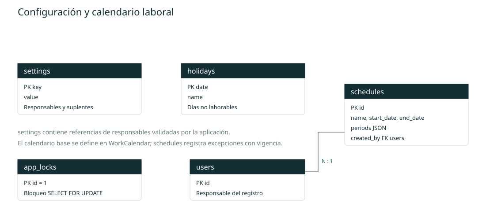

ALCALDÍA MUNICIPAL DE BUCARAMANGA
Manual de la aplicación de permisos compensatorios y licencias
Guía de uso, administración e instalación local para la gestión del Talento Humano. Describe los trámites implementados y las decisiones confirmadas durante el levantamiento de requerimientos.
Versión local actualizada · 27 de octubre de 2026
Comenzar en este equipo
• Ejecute iniciar.cmd desde la carpeta del proyecto y mantenga abierta su ventana mientras use la aplicación.
• Abra http://127.0.0.1:8088 y consulte las cuentas iniciales en storage/acceso-local.txt.
• Cambie la contraseña inicial al ingresar. El usuario admin mantiene funcionarios y responsables.
• Antes de utilizar datos reales, revise la matriz de soportes, el calendario y la configuración de correo.
Contenido de esta guía
Acceso y roles; registro y seguimiento de solicitudes; decisiones y cancelaciones; actos y saldos; administración e importación; calendario y reglas; correo y operación; instalación; matriz de soportes; diagramas de casos de uso y base de datos.
Las cuentas y dependencias precargadas son ficticias. Los correos usan el dominio reservado ejemplo.invalid y no reciben mensajes. La autenticación con el directorio de Windows corresponde a una etapa futura.
Acceso y responsabilidades
Ingrese con su usuario y contraseña propios de la aplicación. El sistema exige cambiar la contraseña temporal. La nueva contraseña debe tener de 12 a 128 caracteres e incluir letras y números. La sesión vence después de 30 minutos de inactividad.
Si olvida la contraseña, solicite al administrador de Talento Humano que restablezca el acceso. Ocho intentos fallidos bloquean temporalmente el ingreso durante 15 minutos.
| Rol | Responsabilidades |
|---|
| Solicitante | Registra solicitudes y actos; adjunta soportes; consulta decisiones; corrige devoluciones; solicita cancelaciones y descarga PDF. |
| Jefe inmediato | Realiza la primera decisión y concluye los Ordinario-Remunerado de hasta dos horas del flujo general. |
| Subsecretario | Concluye el flujo general y resuelve cancelaciones de solicitudes ya aprobadas. Es el jefe de Talento Humano. |
| Alcalde | Decide exclusivamente los permisos de Asesores de Despacho, Secretarios de Despacho y Jefes de Oficina. |
| Administrador de Talento Humano | Mantiene funcionarios, dependencias y responsables; valida actos; administra calendario, matriz y reportes. No reemplaza al aprobador del trámite. |
Reglas de aprobación
• Flujo general: jefe inmediato y después subsecretario. Aplica a permisos, compensatorios y ambas clases de licencias.
• Ordinario-Remunerado de hasta dos horas: solo jefe inmediato, salvo funcionarios clasificados de alto rango.
• Permisos de alto rango: solo alcalde, con independencia de la duración. Sus compensatorios y licencias siguen el flujo general.
• No interviene Nómina y no se utilizan firmas digitales. Cada decisión conserva responsable, fecha y hora de Bogotá.
Registrar y consultar una solicitud
• Abra Nueva solicitud. Compruebe su nombre, identificación, cargo y dependencia. Si hay errores, solicite la actualización a Talento Humano.
• Seleccione el tipo e ingrese una justificación de al menos diez caracteres. Para luto, indique también el parentesco.
• Agregue una o varias fechas. En cada fecha elija Por horas o Día completo. Para periodos de varios días, registre cada día laborable. Se admiten hasta 90 fechas por solicitud.
• Revise el total calculado y la ruta de aprobación. No se aceptan cruces con otra solicitud activa ni horarios superpuestos.
• Revise si el tipo indica soporte obligatorio u opcional. Adjunte al menos un archivo si es obligatorio y pulse Enviar a aprobación. Las solicitudes devueltas conservan sus anexos.
• Consulte Mis solicitudes, abra el radicado y revise el historial. Descargue el PDF con los datos, constancias e incorporación de soportes.
Duración y anticipación
El día ordinario equivale a 510 minutos. De lunes a jueves la jornada es 07:30 a 12:00 y 13:00 a 17:00; el viernes, 07:00 a 12:00 y 12:30 a 16:00. El cálculo excluye almuerzos, sábados, domingos y festivos. Los horarios temporales registrados sustituyen la jornada base durante su vigencia.
La anticipación mínima es de 48 horas calendario dentro de días hábiles. Se cuentan las 24 horas de cada día de lunes a viernes, incluidos almuerzos y horas fuera de la jornada, y se excluyen completos los sábados, domingos y festivos. Por ejemplo, de lunes a las 08:00 a miércoles a las 08:00 se completan 48 horas si no hay festivos. Cuando no se cumple el plazo, el envío exige justificar la excepción con al menos diez caracteres. La duración del permiso sigue calculándose con la jornada laboral.
Ordinario-Remunerado tiene un cupo fijo de 1.530 minutos, equivalente a 25 h 30 min, en cada semestre del año en curso: enero a junio y julio a diciembre. Los permisos de hasta dos horas también consumen cupo. Se incluyen reservas y aprobaciones; las solicitudes devueltas mantienen la reserva hasta que se corrijan, rechacen o cancelen.
Soportes y PDF
Se admiten PDF, JPG y PNG, hasta 12 MB por archivo y diez archivos por carga. Una solicitud puede acumular hasta veinte soportes. Los PDF deben estar sin contraseña, ser compatibles con el importador y tener hasta cien páginas por archivo. Si un PDF se rechaza, vuelva a guardarlo como PDF compatible. Las imágenes no deben superar 25 megapíxeles.
Revisar corregir y cancelar
Decisión del aprobador
Abra Por aprobar y seleccione el radicado. Revise los datos, fechas y soportes. El sistema permite decidir únicamente al responsable de la siguiente etapa. Aprobar completa su etapa; Devolver exige motivo y habilita la corrección del solicitante; Rechazar definitivamente exige motivo y finaliza el trámite liberando las reservas.
El administrador puede actualizar los responsables pendientes cuando cambia un jefe. Las actuaciones ya realizadas se conservan. La aplicación bloquea la autoaprobación; si falta un suplente válido para un trámite propio, Talento Humano debe configurar la designación competente antes del envío.
Aprobar varias solicitudes
El jefe inmediato y el subsecretario pueden abrir Por aprobar, marcar solicitudes individualmente o usar Seleccionar todas de esta página y pulsar Aprobar seleccionadas. Se admiten hasta cien por acción y una observación común opcional. Cada solicitud conserva su ruta, constancia y notificación. El resultado informa cuáles se aprobaron y por qué otras no pudieron procesarse, sin detener las demás. La bandeja tiene paginación y cada lote aprueba solo la etapa seleccionada.
Corregir una devolución
Abra la solicitud devuelta y seleccione Corregir y reenviar. Modifique los datos necesarios y adjunte soportes adicionales. El reenvío inicia una nueva revisión desde la primera etapa, conservando el historial previo. El nuevo tiempo vuelve a validarse contra cupos y saldos.
Cancelar
En una solicitud pendiente o devuelta, indique el motivo y solicite la cancelación: esta se hace efectiva y libera las reservas. Si ya está aprobada, pasa a Cancelación en revisión y conserva su efecto hasta que el subsecretario resuelva. El alcalde no reemplaza al subsecretario en este trámite de cancelación.
Al autorizar una cancelación, se considera disfrutado el tiempo laborable transcurrido hasta la fecha y hora de la decisión; se reintegra el tiempo restante. Si se deniega, la solicitud conserva su aprobación. Si todo el periodo terminó, no se reintegra tiempo.
Ejemplo: se aprobaron 3 horas de compensatorio, de 07:00 a 10:00 un viernes. Si el subsecretario autoriza la cancelación a las 08:00, se conserva 1 hora disfrutada y se reintegran 2 horas.
| Estado | Significado |
|---|
| En aprobación | Esperando la siguiente decisión. |
| Aprobada | Concluyeron todas las etapas. |
| Devuelta para corregir | Requiere modificación y reenvío; conserva reserva. |
| Rechazada | Decisión definitiva; reservas liberadas. |
| Cancelación en revisión | Solicitud aprobada pendiente de decisión de cancelación. |
| Cancelada | Cancelación efectiva; conserva el historial y tiempo disfrutado. |
Actos administrativos y saldos
• Abra Actos y saldos y registre número del acto, fecha de expedición, fecha de vencimiento y total de horas otorgadas. Adjunte el documento del acto.
• Un administrador de Talento Humano diferente del titular revisa el documento y valida o rechaza el registro, dejando observación.
• Solo los actos aprobados y vigentes pueden respaldar una solicitud de Disfrute por acto administrativo.
• Al solicitar el disfrute, asigne las horas que se utilizarán de uno o varios actos. La suma debe coincidir exactamente con la duración de la solicitud.
• Cada acto debe cubrir todas las fechas de la solicitud. Las horas se reservan al enviar, se descuentan definitivamente con la aprobación final y se liberan con el rechazo o la cancelación.
Un saldo vencido permanece visible para consulta histórica, pero no puede utilizarse. Una cancelación no amplía la vigencia del acto. El saldo puede recuperarse contablemente y seguir sin disponibilidad para nuevos disfrutes si el acto ya venció.
Conservación de cálculos
La solicitud guarda las franjas laborables que se usaron al enviarla. Un cambio posterior del calendario o del horario no recalcula las duraciones históricas ni altera lo ya disfrutado. Si cambian las condiciones de una solicitud pendiente, devuélvala para corregir y reenviar.
Importes y unidades
Todos los cálculos se guardan en minutos enteros. En campos de horas, 8,5 equivale a 510 minutos. La interfaz permite incrementos de 0,05 horas, equivalentes a tres minutos. El servicio rechaza valores que no equivalen a minutos enteros.
Administrar funcionarios e importar Excel
Directorio y responsables
En Funcionarios puede crear dependencias, registrar o editar funcionarios y asignar jefe inmediato, suplente, roles y clasificación de alto rango. La clasificación usa tres valores específicos: Asesor de Despacho, Secretario de Despacho y Jefe de Oficina. El cargo escrito como texto no modifica por sí mismo el flujo.
En Responsables asigne al subsecretario y al alcalde actuales. El sistema reasigna las etapas pendientes al guardar un cambio de responsable y registra el ajuste en el historial. Configure suplentes solo cuando exista una designación institucional válida.
Importación
• Descargue la plantilla CSV desde Importar Excel. Puede completarla y guardarla como CSV o XLSX.
• Use los encabezados: cedula, nombre, usuario, correo, cargo, codigo, grado, vinculacion, dependencia, cedula_jefe y alto_rango. Mantenga las cédulas como texto.
• Incluya los jefes en el mismo archivo o asegúrese de que ya existan. Los campos cedula_jefe se resuelven después de registrar todos los funcionarios.
• Cargue un archivo de hasta 5 MB y 1.000 registros. Revise la vista previa y confirme. Una cédula existente actualiza sus datos; una nueva crea una cuenta.
• Descargue las contraseñas temporales de las cuentas nuevas durante esa sesión y entregue cada acceso a su titular. Los roles administrativos existentes se conservan.
Si una fila no cumple la validación, se revierte toda la importación y no se crean registros parciales. El sistema no admite fórmulas. Las dependencias nuevas se crean automáticamente y los funcionarios referenciados como jefes reciben ese rol.
Reportes e historial
Reportes filtra por fechas de disfrute y exporta CSV con una fila por franja solicitada. El historial administrativo muestra las últimas 300 actuaciones; cada solicitud conserva su propio historial completo. Las pantallas de listado tienen límites de filas para la revisión local, detallados en README.md y el código.
Configurar calendario reglas y correo
Calendario y horarios temporales
El calendario nacional se precarga para el año de instalación y los dos siguientes. En Calendario laboral, agregue días no laborables o retire registros futuros cuando corresponda. Los fines de semana siempre se excluyen. Para ampliar la cobertura, ejecute php scripts/calendar.php AÑO.
Registre un horario temporal con fechas de inicio y fin y con la jornada completa de lunes a viernes. Se permiten hasta tres franjas por día; las franjas deben estar ordenadas y no superponerse. No se admiten vigencias temporales que se crucen. La jornada base vuelve a aplicarse cuando termina la vigencia.
Matriz de tipos y soportes
En Tipos y soportes, el administrador marca o desmarca Exigir al menos un soporte para cada tipo de permiso, compensatorio o licencia y pulsa Guardar regla. Al desmarcarlo, el formulario indica Soporte opcional y permite enviar sin adjuntos. Los tipos existentes conservan su obligatoriedad hasta que Talento Humano la cambie. Los archivos que se carguen conservan las validaciones de formato y tamaño. El documento para registrar un acto administrativo que otorga saldo continúa siendo obligatorio.
La obligatoriedad del soporte es independiente de Regla revisada por Talento Humano. El administrador también puede editar documentos, notas y máximo de horas por solicitud. El máximo numérico se aplica solo a reglas revisadas. El cupo semestral Ordinario-Remunerado siempre se valida.
La frecuencia y las condiciones escritas en las notas son informativas. No se han definido controles automáticos de frecuencia, parentescos permitidos o vigencias de beneficios distintos de los actos administrativos. Estas reglas requieren completar y validar la matriz.
Notificaciones
Copie config/example.php a config/local.php y configure host, puerto, usuario, contraseña, cifrado, remitente y URL. Ejecute php scripts/mail-worker.php regularmente con el programador de tareas del servidor. Cada ejecución procesa hasta cincuenta correos y reintenta fallos hasta cinco veces.
Sin SMTP los correos permanecen pendientes. No se ha verificado entrega contra un servidor institucional. Si el trabajador se interrumpe durante un envío, revise los mensajes con estado sending antes de reponerlos en cola para evitar duplicados.
Instalación y operación local
Requisitos: PHP 8.4 o superior compatible con composer.lock; extensiones PDO SQLite, fileinfo, mbstring, GD, zip, intl, DOM, XML, curl y OpenSSL; Composer para instalar dependencias. En este equipo se incluyó un runtime aislado en .runtime/php. No hace falta Node para ejecutar el portal.
• En otro equipo, instale dependencias con composer install --no-dev --prefer-dist.
• Inicialice con php scripts/install.php. Las cuentas iniciales se registran en storage/acceso-local.txt y deben cambiar la contraseña al ingresar.
• Inicie con php -S 127.0.0.1:8088 -t public public/router.php. En este equipo puede usar iniciar.cmd.
• Para cambiar parámetros, cree config/local.php a partir del ejemplo. La base de datos y los soportes deben conservar permisos de lectura y escritura para el proceso PHP.
Respaldo y recuperación
Ejecute php scripts/backup.php para crear una copia consistente de SQLite y de los soportes referenciados. Resguarde también config/local.php por un canal protegido. Para recuperar, detenga el servicio, conserve una copia del estado actual y restaure base y archivos del mismo respaldo antes de iniciar de nuevo.
Arquitectura y comprobaciones
La aplicación usa PHP, PDO y SQLite; TCPDF/FPDI para PDF con anexos; PhpSpreadsheet para XLSX y PHPMailer para SMTP. La carpeta pública es public; app contiene las reglas; views, las pantallas; database, el esquema y catálogo; storage, los archivos privados; y scripts, las herramientas de operación.
La revisión actualizada ejecutó 89 comprobaciones funcionales y 58 por HTTP, incluyendo aprobación masiva, etapas y resultados parciales, soporte opcional, migración, carga multipart, acceso autorizado, PDF con y sin anexos e importación XLSX. Las bases de pruebas son independientes de la base local de demostración.
La publicación en Internet y la integración con el directorio de Windows no se han realizado. La instalación futura requerirá servidor web con raíz en public, HTTPS y configuración institucional de sesiones, correo, acceso y respaldos.
Matriz inicial de duraciones y soportes
Esta matriz distingue las reglas confirmadas de las propuestas pendientes. Los valores de días presentes en el formato se conservan como referencia y no se aplican como límites automáticos adicionales sin validación de Talento Humano.
Permiso
| Tipo | Soportes propuestos | Duración y estado |
|---|
| Ordinario-Remunerado | Soporte que sustente la justificación del permiso. | Cupo confirmado: 1.530 minutos por semestre del año en curso; incluye permisos de hasta dos horas. |
| Académico | Certificado de estudios con horarios y fechas presenciales; propuesta de reposición cuando aplique. | Duración y frecuencia pendientes de validar. |
| Bienestar | Tarjeta vacacional o constancia de asignación del beneficio. | Equivale a Uso de tarjeta vacacional. Soporte propuesto pendiente de validar. |
| Para ejercer la docencia universitaria | Documento que acredita la calidad de docente universitario y su horario. | Duración y frecuencia pendientes de validar. |
| Receso Escolar | Constancia de estudio o último boletín del hijo en escolaridad. | Duración y frecuencia pendientes de validar. |
| Calamidad | Documento que sustente el evento y la justificación de la solicitud. | Soporte propuesto; duración y condiciones pendientes de validar. |
| Quinquenio | Constancia de reconocimiento de antigüedad o del derecho al permiso. | El formato menciona 4 días. Límite pendiente de confirmar; solo existe como permiso. |
Compensatorio
| Tipo | Soportes propuestos | Duración y estado |
|---|
| Disfrute por acto administrativo | Acto administrativo registrado y aprobado por Talento Humano; soporte de la solicitud. | Saldo, reserva y fecha de vencimiento obligatorios. |
| Bici usuario | Registro de ingreso y salida en bicicleta. | El formato menciona 1 día. Duración y frecuencia pendientes de confirmar. |
| Sufragar | Certificado electoral. | El formato menciona medio día. Duración y frecuencia pendientes de confirmar. |
| Claveros / Jurado de votación | Certificación de la Registraduría como clavero o jurado de votación. | El formato menciona 1 día. Duración y frecuencia pendientes de confirmar. |
| Cumpleaños | Documento de identidad que permita acreditar la fecha de nacimiento. | El formato menciona 1 día. Duración y frecuencia pendientes de confirmar. |
Licencia remunerada
| Tipo | Soportes propuestos | Duración y estado |
|---|
| Matrimonio | Registro civil de matrimonio. | El formato menciona 5 días. Duración y condiciones pendientes de confirmar. |
| Luto | Documentos para acreditar el fallecimiento y el parentesco. | El formato menciona 5 días. Matriz de parentesco y documentos pendientes de validar. |
| Actividades deportivas | Solicitud o certificación de la entidad deportiva competente. | Entidad y duración pendientes de validar con Talento Humano. |
Licencia no remunerada
| Tipo | Soportes propuestos | Duración y estado |
|---|
| Para adelantar estudios | Duración del programa académico y copia de la matrícula durante la licencia. | Duración y condiciones pendientes de validar. |
| No Remunerada Ordinaria | Documento que sustente la justificación de la licencia. | Soporte propuesto; duración y frecuencia pendientes de validar. |
Fuentes y decisiones de implementación
La fuente funcional principal son las instrucciones y respuestas del usuario. El formato institucional entregado es F-GAT-8100-238,37-183, versión 6.0; aporta campos y soportes. En caso de diferencia se aplican las decisiones expresas del usuario: Bienestar equivale a tarjeta vacacional, Quinquenio solo es permiso y no hay visto bueno de Nómina.
El calendario nacional se calcula con las reglas de traslado de la Ley 51 de 1983. Incluye desde 2026 la conmemoración del 9 de julio trasladada al lunes siguiente cuando corresponde, documentada por la Circular MTIC 23 de 2026. Los días adicionales municipales se mantienen en el calendario de la aplicación.
Ley 51 de 1983 - Normograma Cancillería
Circular MTIC 23 de 2026
Instalación FPDI y compatibilidad con TCPDF
PHP para Windows
Condiciones pendientes para la operación institucional
• Entregar el Excel real y revisar correspondencias de columnas, jefes y clasificaciones de alto rango.
• Completar y validar duraciones, frecuencias, parentescos y soportes obligatorios de los beneficios que no tienen regla confirmada.
• Proporcionar parámetros SMTP y verificar la recepción de novedades con cuentas institucionales.
• Definir responsables competentes para las solicitudes propias de aprobadores que no tengan suplente configurado.
Decisiones técnicas visibles en el funcionamiento
Las solicitudes se registran para fechas y horas futuras. La aprobación final se detiene si su fecha inicial ya pasó, en cuyo caso se debe devolver para corregir. La cancelación reintegra tiempo según la hora de autorización, no según la hora de petición. Las solicitudes devueltas retienen sus reservas y un cambio de calendario no recalcula trámites existentes.
Casos de uso

Base de datos de trámites

Base de datos de saldos y soportes

Base de datos de configuración

Diccionario de tablas
| Tabla | Campos |
|---|
| acts | id, user_id, number, issued_on, expires_on, granted_minutes, status, reviewed_by, reviewed_at, comment, created_at |
| allocations | id, request_id, act_id, minutes, state, returned_minutes |
| approvals | id, request_id, revision, step, role, assigned_user_id, status, acted_by, acted_at, comment |
| attachments | id, user_id, request_id, act_id, original_name, stored_name, mime, size, sha256, created_at |
| categories | id, family, name, slug, supports, max_minutes, policy_confirmed, notes, supports_required |
| departments | id, name |
| events | id, actor_id, request_id, action, detail, created_at |
| holidays | date, name |
| outbox | id, recipient, subject, body, status, attempts, last_error, created_at, sent_at |
| request_slots | id, request_id, date, start_time, end_time, minutes, segments, semester |
| requests | id, user_id, category_id, status, justification, exception_reason, relationship, total_minutes, snapshot, revision, created_at, updated_at, cancellation_reason, cancelled_at, route_note |
| schedules | id, name, start_date, end_date, periods, created_by |
| settings | key, value |
| users | id, name, identification, username, email, password, job_title, code, grade, appointment_type, department_id, manager_id, deputy_manager_id, high_rank, roles, active, force_password, failures, locked_until |
El esquema SQL completo y sus restricciones se encuentran en database/schema.sql. Los tiempos se guardan en minutos, los roles y copias de datos del funcionario como JSON y las constancias como eventos y aprobaciones. Las contraseñas se guardan como hash; los soportes quedan fuera de la raíz pública.